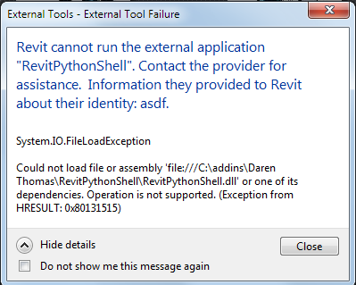
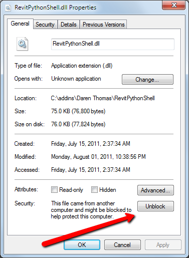

Revit Add-in File Load Exception
Back from my vacation in Andalusia, and now moving full speed ahead towards Autodesk University, my lecture and hands-on lab on the Revit extensible storage API and all the other exciting goodies there.
Meanwhile, here is one little issue that immediately arose with the Revit String Search utility published last week:
Probably the most common problem that people keep running into with add-ins on Windows Vista, both in Revit and other environments, is the need to unblock the zip file.
If you are impatient, the solution is easy and available with no need to read any further.
If you are interested in other aspects, here goes with another take on this:
Zach Kron had an issue on some non-XP machines trying to run Daren Thomas' RevitPythonShell.
It was not installing properly and displaying the following message:

The error message says:
Revit cannot run the external application "RevitPythonShell". Contact the provider for assistance. Information they provided to Revit about their identity: asdf.
System.IO.FileLoadException
Could not load file or assembly 'file:///C:\addins\Daren Thomas\RevitPythonShell\RevitPythonShell.dll' or one of its dependencies. Operation is not supported (Exception from HRESULT: 0X80131515)
Zach figured out the solution, which has already been documented by Gregory Mertens of mertens3d.com in the hatch22-2012 installation guide, who in turn picked it up from joseguia in this revitforum.org thread:
The issue is due to the security option. You can right click on RevitPythonShell.dll in Win 7 and select Properties > General to obtain access to the Unblock button for setting it:

Many thanks to Zach for pointing this out, and to Gregory for running into, solving, and providing the problem solution in the first place! Hopefully this will be a helpful hint for anyone running into a similar issue installing some other Revit add-in.
We later discovered that Kean Walmsley also provided a comprehensive explanation of this issue to unblock ZIP files before installing Plugins of the Month on Autodesk Labs.